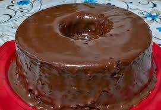
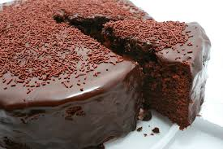

Bolo de Chocolate
O bolo de chocolate é um queridinho dos brasileiros. Clássico do lanche da tarde, esta receita fácil simples combina com um cafezinho. Para preparar a massa do bolo, você vai precisar de chocolate em pó, farinha de trigo, açúcar, ovos, fermento em pó e óleo.

Ingredientes
- 3 Ovos
- 1 e meia xícara de chá de açúrcar
- 1 xícara de chá de chocolate em pó
- Meia xícara de chá de óleo
- 2 xícaras de chá de farinha de trigo
- 1 colher de sopa de fermento em pó
- 1 xíxara de chá de água quente
Modo de Preparo
- Em uma tigela, coloque 3 ovos, 1 e meia xícara de chá de açúcar,
meia xícara de chá de óleo, 1 xícara de chá de chocolate em pó e 2 xícaras de chá de farinha de trigo. Misture delicadamente os ingredientes.
-
Em seguida, adicione 1 xícara de chá de água quente, 1 colher de sopa de
fermento em pó e bata até ficar homogêneo.
-
Transfira a massa para uma forma untada e enfarinhada com uma mistura de farinha de trigo e chocolate em pó.
Leve para assar em forno preaquecido a 180 graus Celsius por 40 minutos.
Recheio
- 1 lata de leite condensado
- 2 colheres (sopa) de chocolate em pó
- 2 colheres (sopa) de margarina
- 1 caixinha de creme de leite
Modo de preparo
- Coloque o leite condensado, as 2 colheres de margarina e as 2 colheres de chocolate em pó em uma panela. Faça um brigadeiro até desgrudar do fundo da panela.
- Apague o fogo e acrescente o creme de leite e mexa muito bem
- Repita essa receita 2 vezes uma para cobertura outra para o recheio.
